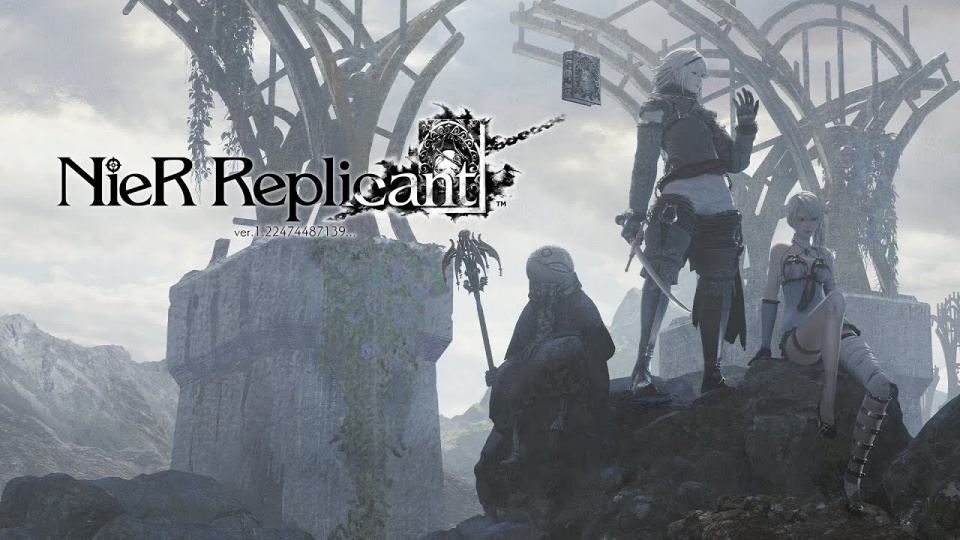

Kyle Wilcox
@DEC0DE
Home
Contact
Nier Replicant 1.2 Weapon Tracker

First Half Of The Game
Nirvana Dagger: Lost Shrine, in a box on the second floor after climbing a ladder
Moonrise: Rewarded after helping a guard outside of Seafront fight shades
Blade of Treachery: Emil’s Mansion, before the final boss fight.
Faith: Free all the villagers in the Forest of Myth, or briefly purchasable at the Aerie blacksmith in the second half
Second Half Of The Game
Fang of the Twins: Emil’s Mansion, in a crate near the door that requires keycard SA
Beastlord: Lost Shrine, on the roof
The Devil Queen: Lost Shrine, in a crate by the rear entrance
Beast Curse: Junk Heap, in the save room before the boss fight
Phoenix Sword: Shadowlord’s Castle, near the doves
Dragoon Lance: Shadowlord’s Castle, in a crate before the spiral staircase
Item Shop Weapons
Total Gold Needed: 207,600
Lily-Leaf Sword: 2400 gold, village blacksmith
Beastbain: 16800 gold, village blacksmith
Earth Wyrm’s Claw: 8400 gold, Facade blacksmith
Phoenix Dagger: 31200 gold, Seafront blacksmith
Axe of Beheading: 19200 gold, village blacksmith
Vile Axe: 21600 gold, Seafront blacksmith
Spear of the Usurper: 21600 gold, Seafront blacksmith
Sunrise: 21600 gold, village blacksmith
Captain’s Holy Spear: 32400 gold, Facade blacksmith
Phoenix Spear: 32400 gold, Facade blacksmith
Side Quest Weapons
Labyrinth’s Whisper: Complete “A Bridge in Peril”
Labyrinth’s Song: Complete “Disturbing the Sleep of Kings”
Labyrinth's Shout: Complete “The Damaged Map”
Iron Pipe: Complete “The Magical Stone,” or get Ending B
Fool’s Embrace, Fool’s Lament, Fool’s Accord: All rewarded through “The World of Recycled Vessels” DLC, accessible via book in your home starting on Route B.